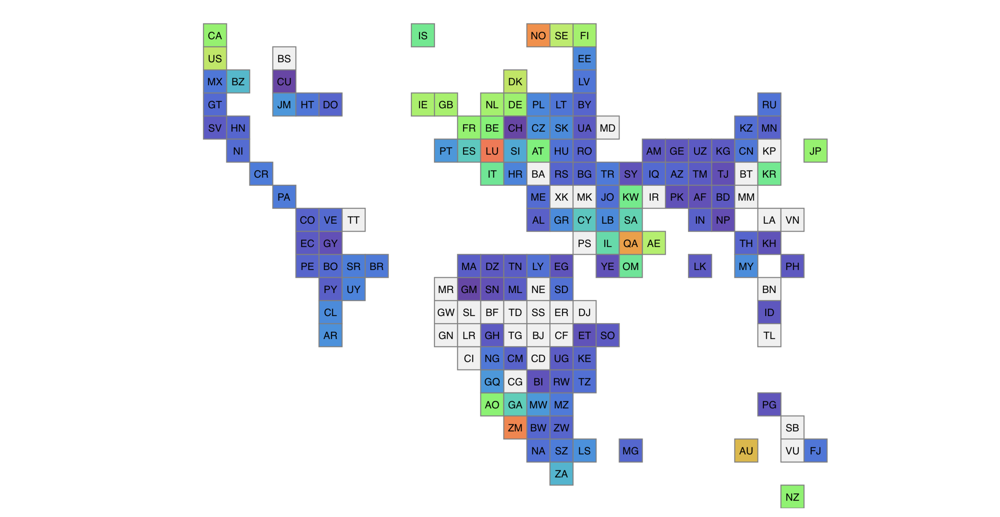
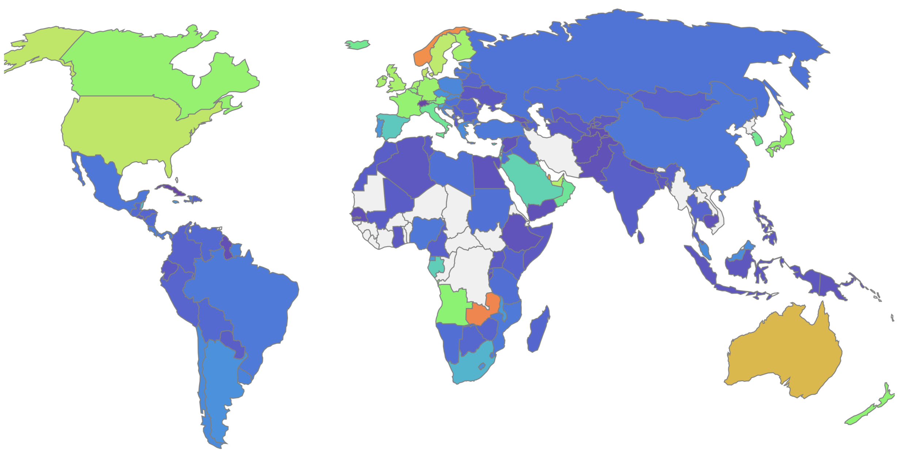

30 Day Map Challenge, 2020
For the month of November, Topi Tjukanov announced a 30 Day Map Challenge on Twitter.
[caption id=“” align=“alignnone” width=“960”] Source: https://github.com/tjukanovt/30DayMapChallenge [/caption]
Source: https://github.com/tjukanovt/30DayMapChallenge [/caption]
The idea is to create (and publish) maps based on different themes on each day of the month using the hashtag #30DayMapChallenge, you can prepare the maps beforehand, but the main idea is to publish maps from specific topics on specific days listed below. Just include a picture of the map when you post to Twitter with the hashtag.
You don’t have to sign up anywhere to participate. There are no restrictions on the tools, technologies and the data you use in your maps. Doing less than 30 is also fine (and actually doing all 30 is really hard!).
As I don’t have Twitter account, so I would like to publish through this blogpost and update it every day.
Happy mapping!
Day 30 of #30DayMapChallenge – A map
This is “A Map” text entirely made up of satellite imagery. Each letter would be a real world feature from a bird’s eye view. A building in the shape of an “A”, a lake in the shape of a “M”, a tree in the shape of a “P”..
Data. Google Satellite. Tools: Preview.app on macOS
{kind=link}
Day 29 of #30DayMapChallenge – Globe
H3 and tesselations on the sphere, and multiple levels of granularity.
Data. H3 Uber. Tools: Observable

Day 28 of #30DayMapChallenge – Non geographic map
Scatterplots, summary of earthquake that happen in the past week.
Data. USGS. Tools: Plotly

Day 27 of #30DayMapChallenge – Big or small data
World tile grid map.
Data. Natural Earth. Tools: D3
 
Day 26 of #30DayMapChallenge – Map with a new tool
According to infographic of the History of Open Source GIS from Makepath blog, xarray-spatial is categorized as a new tool, launched in 2020. Below map is example on how xarray-spatial could help finding shortest path using A* from start location to destination location.
Data. OSM. Tools: xarray-spatial
{kind=link}
Day 25 of #30DayMapChallenge – COVID-19
Elderly population and access to hospital.
Data. BIG, OSM, NASADEM, MenLHK, Facebook. Tools: ArcGIS Desktop 10.7
{kind=link}
Day 24 of #30DayMapChallenge – Elevation
Lightweight relief shearing for enhanced terrain perception.
Data. NASA’s Shuttle Radar Topography Mission. Tools: http://elasticterrain.xyz/map/

Day 23 of #30DayMapChallenge – Boundaries
Administrative boundaries; red: admin1, orange: admin2, purple: admin3, blue: admin4; grey: admin5.
Data. Statistics Indonesia - https://sig.bps.go.id Tools: ArcGIS Desktop 10.7
{kind=link}
Day 22 of #30DayMapChallenge – Movement
Population movement in 24 April 2020, 16:00 - 24:00.
Data. Facebook Disaster Maps - https://dataforgood.fb.com/tools/disaster-maps/ Tools: Kepler.gl

Day 21 of #30DayMapChallenge – Water
Historical flood occurrence in November, 1984 - 2019.
Data. Global Monthly Water History - EC JRC. Tools: Google Earth Engine

Day 20 of #30DayMapChallenge – Population
Children under 5 population.
Data. Facebook Population Density - https://dataforgood.fb.com/tools/population-density-maps/ Tools: ArcGIS Desktop 10.7

Day 19 of #30DayMapChallenge – NULL
Cloud cover can cause NULL data on Land Surface Temperature information generated by MODIS satellite.
Data. MODIS - https://lpdaac.usgs.gov/products/mod11a2v006/ Tools: ArcGIS Desktop 10.7
{kind=link}
Day 18 of #30DayMapChallenge – Landuse
Landuse of Kalimantan in 2019
Data: Ministry of Environment and Forestry - http://geoportal.menlhk.go.id/arcgis/rest/services/KLHK/Penutupan_Lahan_Tahun_2019/MapServer Tools: QGIS 3.16

Day 17 of #30DayMapChallenge – Historical
Historical style map of Indonesia archipelago.
Data: OpenStreetMap. Tools: Mapbox Studio

Day 16 of #30DayMapChallenge – Island(s)
Lombok island
Data: OpenStreetMap. Tools: Mapbox Studio
{kind=link}
Day 15 of #30DayMapChallenge – Connections
Port accessibility, measured travel time (mixed transportation mode) to the nearest public port (operated by govt: Pelindo or Kemenhub). Cargo vessel frequency, recorded thousands of commercial ships that moved across the ocean in 2012
Data: Accessibility map using various data and modeled via ArcGIS Model Builder. Ship line http://ede.grid.unep.ch/download/shipping_tif.zip Tools: ArcGIS Desktop 10.7

Day 14 of #30DayMapChallenge – Climate changes
General sensitivity of rainfall in Indonesia to sea surface temperature (SST) changes in NINO-4 region (Strength of La Niña signal)
Data: Precipitation (https://catalogue.ceda.ac.uk/uuid/89e1e34ec3554dc98594a5732622bce9) and SST (https://psl.noaa.gov/gcos_wgsp/Timeseries/). Tools: R Statistics
{kind=link}
Day 13 of #30DayMapChallenge – Raster
Landsat 8 RGB true-color composite. Path/Row 119/65.
By using ImageMagick (free and open-source cross-platform software suite for displaying, creating, converting, modifying, and editing raster images), to get something that looks like land looks, we need to increase both brightness and contrast. Most well-known method is the -sigmoidal-contrast flag for convert, which takes a two-part argument: a scale factor for the contrast, plus the brightness value in the input image that should end up at 50% (midtone) in the output image. We can take the haze into account by lowering the blue channel’s gamma (brightness) slightly, and raising the red channel’s even less, before increasing the contrast. This gives us something that’s green where it should be green.
Data: Landsat-8 downloaded from RemotePixel - https://search.remotepixel.ca/#8.67/-7.1864/111.5247 Tools: ImageMagick

Day 12 of #30DayMapChallenge – Map not made with GIS Software
COVID-19 cumulatives case as of 10 Nov 2020.
Data: https://covid19.who.int/WHO-COVID-19-global-data.csv Tools: Microsoft Excel

Day 11 of #30DayMapChallenge – 3D
Population movement data in a day.
Data: Facebook Population Movement. Tools: kepler.gl
{kind=link}
Day 10 of #30DayMapChallenge – Grid
Rainfall grid with 0.05 deg spatial resolution.
Data: CHIRPS rainfall grid. Tools: ArcGIS Desktop

Day 9 of #30DayMapChallenge – Monochrome
Nyepi - Day of Silence, 25 Mar 2020.
Data: VNP46A1 - The VIIRS Nighttime Imagery (Day/Night Band, Enhanced Near Constant Contrast). Tools: ImageMagick, Inkscape
{kind=link}
Day 8 of #30DayMapChallenge – Yellow
S1 backscatter, R co-pol (dB), G cross-pol (dB), Blue ratio.
Data: Sentinel-1. Tools: GEE

Day 7 of #30DayMapChallenge – Green
S1 backscatter, R co-pol (dB), G cross-pol (dB), Blue ratio.
Data: Sentinel-1. Tools: GEE

Day 6 of #30DayMapChallenge – Red
S1 backscatter, R co-pol (dB), G cross-pol (dB), Blue ratio.
Data: Sentinel-1. Tools: GEE
{kind=link}
Day 5 of #30DayMapChallenge – Blue
S1 backscatter, R co-pol (dB), G cross-pol (dB), Blue ratio.
Data: Sentinel-1. Tools: GEE
{kind=link}
Day 4 of #30DayMapChallenge – Hexagons
Rainfall exceeding the threshold for the period 25 Dec 2019 - 4 Jan 2020.
Data: GPM IMERG, Final Daily. Tools: kepler.gl
{kind=link}
Day 3 of #30DayMapChallenge – Polygons
Adapted from Philippe Rivière works on the Martinez-Rueda-Feito polygon-clipping algorithm.
Data: Natural Earth 1:110m Physical Vectors, Land polygons including major islands. Tools: Observable
{kind=link}
Day 2 of #30DayMapChallenge – Lines
The below lines is actually a ~21,237 km car route from Cape Town, South Africa to Singapore on a world scale.
Data: Generated by the GraphHopper Directions API based on OpenStreetMap data. Tools: QGIS, GraphHopper


Day 1 of #30DayMapChallenge – Points
Population change and movement in Indonesia
Based on Facebook population data, between 31 Mar 2020 and 24 Apr 2020, there were reductions in the population of Facebook users in major urban areas throughout the country. Concurrently, peri-urban and rural areas have observed increases in Facebook user population during the period.
Data: Facebook Population Movement. Tools: kepler.gl